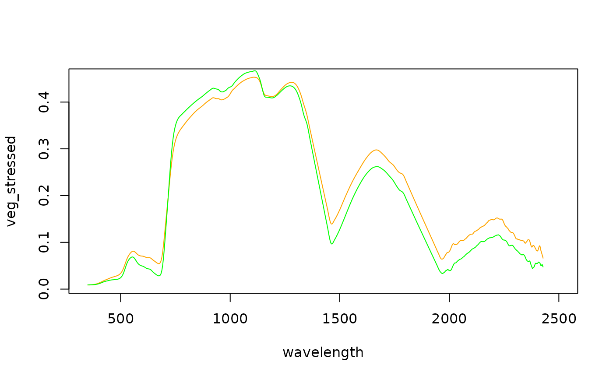

read/write support for ENVI spectral libraries
Value
The spectral libraries are read into a data.frame. The first column contains the wavelengths and the remaining columns contain the spectra.
Details
ENVI spectral libraries consist of a binary data file (.sli) and a corresponding header (.hdr, or .sli.hdr) file.
Examples
## Example data
sliFile <- system.file("external/vegSpec.sli", package="RStoolbox")
sliTmpFile <- paste0(tempdir(),"/vegetationSpectra.sli")
## Read spectral library
sli <- readSLI(sliFile)
head(sli)
#> wavelength veg_stressed veg_vital
#> 1 350 0.008958003 0.008836994
#> 2 351 0.008910760 0.008909440
#> 3 352 0.008874181 0.008972186
#> 4 353 0.008847097 0.009025744
#> 5 354 0.008829174 0.009071405
#> 6 355 0.008819440 0.009109739
plot(sli[,1:2], col = "orange", type = "l")
lines(sli[,c(1,3)], col = "green")

## Write to binary spectral library
writeSLI(sli, path = sliTmpFile)